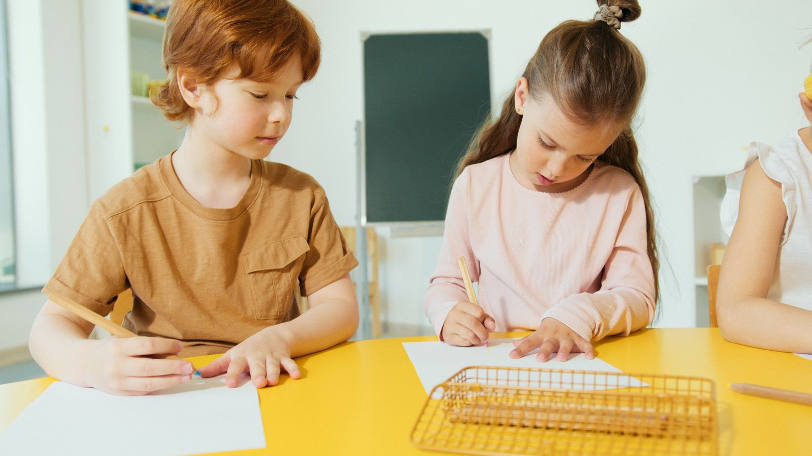

Patterns · reasoning · confidence
Primary Maths
Explore Wonderlab’s Primary 3 to 6 Maths tuition. Ask us for current programme details.
Wonderlab · Singapore
Explore Primary Maths and Science tuition in Singapore for Primary 3 to 6. Big questions deserve thoughtful teaching, and clear explanations help ideas make sense.
Maths & Science · Primary 3–6

At Wonderlab, Maths and Science are more than facts to remember. They offer ways to make sense of the world—through clear explanations, meaningful connections and thoughtful questions.
Get to know our approach →Primary Maths and Science tuition for Primary 3 to 6, with programme details shared directly on enquiry.

Patterns · reasoning · confidence
Explore Wonderlab’s Primary 3 to 6 Maths tuition. Ask us for current programme details.

Concepts · observation · curiosity
Discover Primary Science tuition for Primary 3 to 6, with details shared directly on enquiry.
Ask us for current Primary Maths and Science programme details.
Meet your teacher
Meet Mrs Jayakody, the teacher guiding Wonderlab’s Primary Science learning. Her classroom is a place for thoughtful questions, clear explanations and the confidence to keep exploring.
Approved portrait to be supplied; the illustrated placeholder is not Mrs Jayakody’s photograph.
Meet Mrs Jayakody →Wonder in the everyday
Representative stock scenes offer a glimpse of curiosity, careful thinking and shared learning. They do not depict Wonderlab students or classes.
Image gallery
Representative stock imagery, not Wonderlab students or classes.
 Video introduction
Video introductionFeatured media
No Wonderlab video has been supplied yet. This area is ready for an approved introduction video; it is not a player and has no play action until a real video source is provided.
Take the first step
Get in touch to ask about a trial class and find out whether Wonderlab is the right fit for your child.
Let’s start a conversation
Tell us what you’re looking for. We’ll be glad to share more about Wonderlab’s Primary Maths and Science programmes.
Enquire now ↗Email us at admin@wonderlab.sg